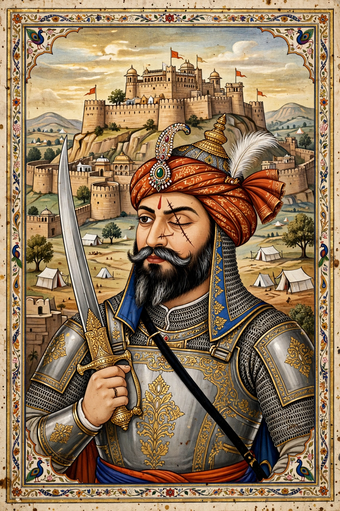

| Rana Sanga | |
|---|---|
 | |
| Born | Sangram Singh, 12 April 1482 Chittor, Mewar |
| Died | 30 January 1528 (aged 45) Kalpi |
| Reign | Maharana of Mewar, 1508–1528 |
| Battles | Khatoli; Gagron; Khanwa (1527) |
Rana Sangram Singh I (12 April 1482 – 30 January 1528), popularly known as Rana Sanga, was the Maharana of Mewar from 1508 to 1528 and the most powerful Rajput ruler of his age. He united the Rajput clans into a confederacy that defeated the sultanates of Malwa, Gujarat, and Delhi before falling to Babur at the Battle of Khanwa.
Sanga succeeded after a fratricidal struggle in which he lost an eye and the use of an arm; tradition counts some eighty wounds on his body by the end of his life. From Chittor he extended Mewar's power, defeating Mahmud Khilji II of Malwa at Gagron (1519) — taking the sultan prisoner and, by celebrated tradition, releasing him honourably — and twice defeating Ibrahim Lodi of Delhi at Khatoli and Bari.
After Babur destroyed the Lodi empire at Panipat in 1526, Sanga advanced to expel the new invader. Afghan chiefs such as Hasan Khan Mewati joined his confederacy. At Khanwa on 16 March 1527 Babur's artillery and tulughma cavalry tactics routed the Rajputs; Sanga, wounded, was carried from the field. Preparing a second campaign, he died at Kalpi on 30 January 1528 — Rajput tradition holds that his own nobles poisoned him to avert another disaster.
Sanga is remembered as the last Hindu ruler to unite the Rajput states against the sultanates, and his grandson-by-lineage Maharana Pratap inherited his mantle of resistance.